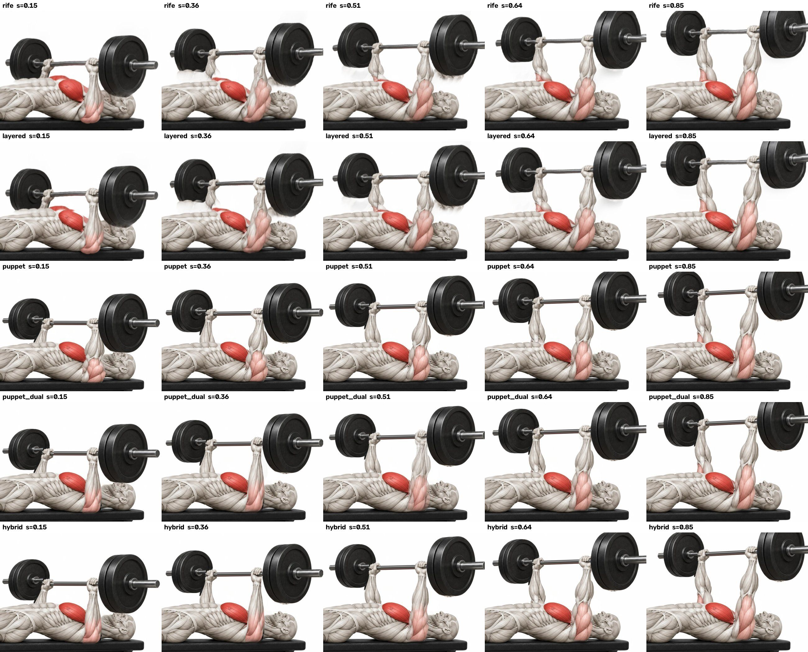
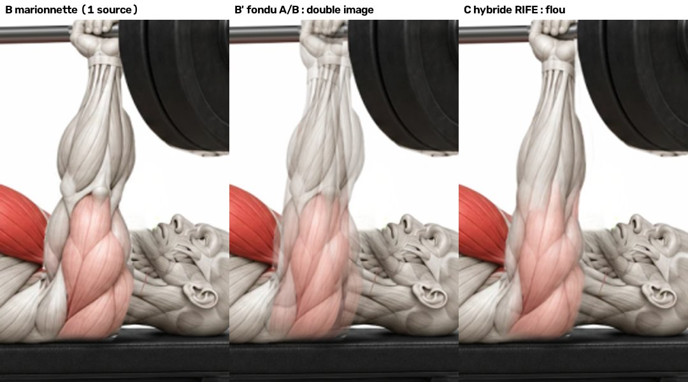
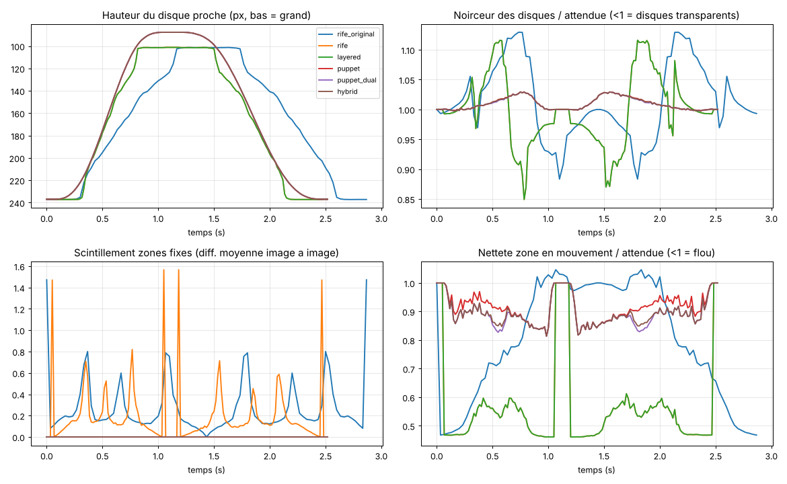

Marionnette 2D construite à partir des deux images fixes. Le fond, le banc et le corps ne bougent jamais : seuls les bras, la barre et les disques sont animés.
Vidéo H.264 60 i/s, sans son, en boucle. C'est le format le plus sûr pour Safari sur iPhone.
| Méthode | Scintillement fond | Pixels fixes qui bougent | Disques (min.) | Netteté (min.) | Raccord boucle |
|---|---|---|---|---|---|
| RIFE seul (essai d'origine, 30 i/s) | 0,28 | 2,16 % | 0,88 | 0,47 | 0,23 |
| RIFE seul, nouveau rythme | 0,19 | 1,43 % | 0,85 | 0,46 | 0,00 |
| A · Calques + RIFE | 0,00 | 0,00 % | 0,85 | 0,46 | 0,00 |
| B · Marionnette (1 source) | 0,00 | 0,00 % | 1,00 | 0,81 | 0,00 |
| B' · Marionnette + fondu A/B | 0,00 | 0,00 % | 1,00 | 0,81 | 0,00 |
| C · Hybride marionnette + RIFE | 0,00 | 0,00 % | 1,00 | 0,81 | 0,00 |
Disques (min.) : surface noire des disques au pire moment, par rapport aux images d'origine. Sous 1, les disques deviennent transparents (images fantômes). Netteté (min.) : netteté de la zone en mouvement au pire moment, 1 = aussi net que les images d'origine.


